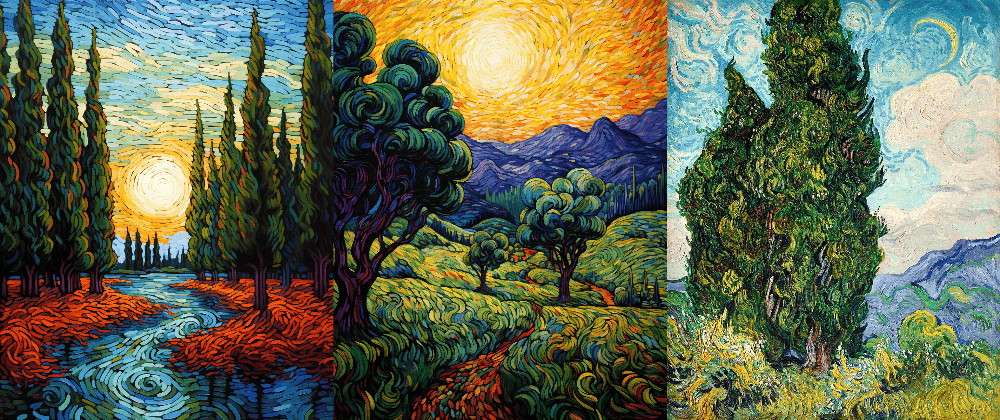

AI art is artwork created with the assistance of artificial intelligence algorithms. These algorithms can generate images, apply artistic styles, and even create new visuals by learning patterns from large datasets of existing art. The rise of AI art challenges traditional notions of creativity and opens new possibilities for artists and designers.
Popular AI techniques include Generative Adversarial Networks( a type of deep learning model that use two neural networks, a generator and a discriminator, in a competitive relationship to generate realistic data.), neural style transfer, and diffusion models. The result can range from surreal landscapes to abstract portraits.
In recent years, AI-generated art has moved from experimental labs into mainstream culture. Artists use platforms like DALL·E, Midjourney, and Stable Diffusion to turn simple text prompts into intricate visual pieces. These tools allow anyone — regardless of traditional artistic skill — to explore creativity in new ways.
AI art is also raising important questions about authorship, originality, and the definition of art itself. Who owns an image created by a machine? Can a machine truly be creative, or is it simply recombining existing ideas? These debates are shaping the future of digital art and intellectual property in the age of automation.
Despite the controversy, AI art is undoubtedly pushing the boundaries of visual expression. It blends human intention with machine-generated execution, offering a glimpse into a future where creativity is increasingly collaborative — between people and intelligent systems.